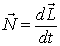
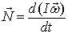
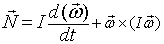
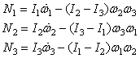

The gyroscope path shows precession and nutation.
The behavior of a rigid body rotating about a fixed point is determined by

where the angular momentum L and torque N are vectors. For a constrained body, such as gyroscope, the fixed point is usually taken as the point of support. The angular momentum L is expressed in terms of the angular velocity ω and the moment of inertia tensor I as L=Iω where ω is a vector. Substituting the angular momentum expression into the rate expression gives the rotational equivalent of Newton's second law.

The difficulty in solving this equation is that the moment of inertia tensor I is not constant in the inertial reference frame (space frame). This computational difficulty is overcome by transforming the rate equation into a non-inertial rotating coordinate system that is aligned with the principal axes of the rotating gyroscope. Although the moment of inertia is constant and diagonal in this reference frame, the transformation introduces an additional term into the rate equation.

The transformed rate equation is Euler's equation for rigid body motion and is usually written in component form to highlight the importance of the diagonal inertia matrix elements I1, I2, and I3.

We label the vector components in the rotating system as the 123-axis components in order to avoid confusion with the fixed (spatial) xyz-axis components.
The solution of Euler's equation is not easy because the orientation of the gyroscope must be tracked and because the gravitational torque must be constantly transformed from the space frame to the body frame as the solution advances. Analytical solutions exist only for special conditions. Fortunately, EJS provide the tools needed for an accurate numerical solution. In this model, the gyroscope orientation is expressed using a quaternion as described in the references and the quaternion rate equation is solved using an adaptive ODE solver. This quaternion is used to transform the gravitational force into the gyroscope body frame and to orient the view elements, such as the gyroscope body, after every time step but the algebra needed to perform these transformations is built into the EJS Elements and hidden from the user.